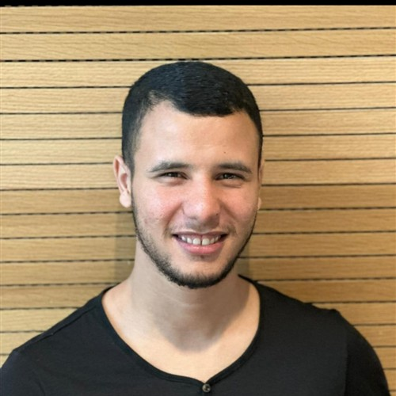

2025
Swin-Editor: Enhancing Consistency in Text-Driven Video Editing
A. Aitrouga, et al. — International Conference on Artificial Intelligence and Soft Computing (ICAISC), Springer
doi.org/10.1007/978-3-032-03708-4_2 ↗PhD Student in Artificial Intelligence · UM6P
I work at the intersection of brain activity and visual representation, building deep generative models that reconstruct and interpret what the brain sees from large-scale fMRI data. Previously, I worked on text-driven video editing, video generation, and video understanding.

I'm a PhD student in Artificial Intelligence at Mohammed VI Polytechnic University (UM6P), based within AI Movement — the International Artificial Intelligence Center of Morocco. My research bridges neuroscience and computer vision: I work on large-scale fMRI datasets and scalable deep learning architectures to reconstruct and interpret visual information directly from neural signals.
Before starting my PhD, I worked on text-driven video editing, video generation, and video understanding, contributing to two publications on efficient, consistent transformer- and RWKV-based video editing architectures.
I hold a Master's degree in Data Science & Big Data from ENSIAS (ranked #1 in its cohort) and a Bachelor's degree in Applied Mathematics from Ibn Zohr University.
A. Aitrouga, et al. — International Conference on Artificial Intelligence and Soft Computing (ICAISC), Springer
doi.org/10.1007/978-3-032-03708-4_2 ↗A. Aitrouga, et al. — arXiv preprint
doi.org/10.48550/arXiv.2509.25998 ↗Deep Learning–Based Action Recognition
Content-Based Image Retrieval — Image Similarity Search
More code on github.com/Abdo-RG
Mohammed VI Polytechnic University · AI Movement, Rabat, Morocco
ENSIAS, Mohammed V University — ranked #1 in cohort · Rabat, Morocco
FSA, Ibn Zohr University · Agadir, Morocco
Abdellah Ibn Yassine College · Inzegane, Morocco
Python, PyTorch, NumPy
Deep Learning, Transformers, Diffusion Models, Multimodal Learning
Video Understanding, Image Retrieval, Visual Representation Learning
OpenCV, Scikit-learn, Git, Linux, SLURM
Large-scale datasets, fMRI data processing
I'm actively looking for a PhD visiting research internship to complement my work on neural decoding and multimodal generative models. If you lead a lab working on brain–computer interfaces, neuro-AI, multimodal representation learning, or generative vision, I'd love to hear from you.